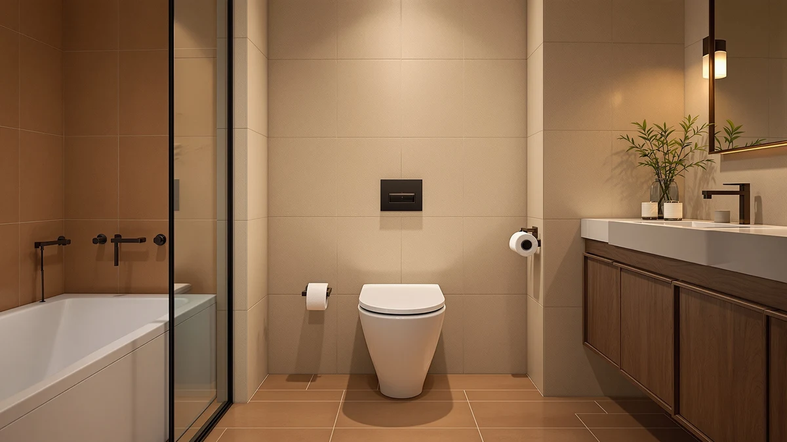

KOHLER Cachet ReadyLatch Elongated Review (2026): Worth It?
Prices and picks verified as of August 2026. Independent, reader-supported reviews.


Quick Answer
The KOHLER Cachet ReadyLatch Elongated Toilet is our top pick among the elongated seats we compared, backed by a 4.4 out of 5 rating across 41,303 verified reviews at $56.35. If cushioning matters more to you than review volume, the Plexon Soft Cushioned Toilet Seat at $52.95 is worth a look instead.
Our pick: KOHLER Cachet ReadyLatch Elongated Toilet, $56.35 Check Price on Amazon
Bottom line: our top pick is the KOHLER Cachet ReadyLatch Elongated Toilet Seat at $61.82.
Things to Know Before You Buy
- The KOHLER Cachet ReadyLatch costs $56.35, about $3.40 more than either padded alternative from Plexon at $52.95.
- Owners rate it 4.4 out of 5 across 41,303 verified reviews, more feedback than either elongated seat alternative in this comparison.
- It ships in an elongated profile only, so measure your bowl before ordering; round-bowl households need a different round seat.
- The plastic and wood-composite build keeps the price down compared with premium soft-close wood seats.
- If accessibility is the priority rather than seat style, the Raised Toilet Seat Riser Adjustable, also covered in our raised seats for seniors guide, solves a different problem.
If you're looking for a straight answer in this kohler cachet readylatch elongated review, here it is: the $56.35 seat holds a 4.4 out of 5 rating across 41,303 verified reviews, more owner feedback than either alternative we compared it against. That combination of price, elongated-specific sizing, and review volume makes it a reasonable default for most households shopping for a replacement seat.
This review breaks down what the price, material, and review volume actually tell you before you commit to an elongated replacement seat, rather than repeating the marketing copy from the product page. We put the KOHLER Cachet ReadyLatch side by side with the Plexon Soft Cushioned Toilet Seat and the Raised Toilet Seat Riser Adjustable, two alternatives that solve different problems, cushioning in one case and accessibility in the other, so you can see where each one fits your bathroom instead of guessing from a listing page alone. We also cover who should skip the Kohler entirely, since no single seat works for every household.
Why You Should Trust Us
Ilane Tall covers toilet seats and bathroom accessibility products for Best Toilet Seats, and this kohler cachet readylatch elongated review follows the same research process used across the site. Rather than claiming hands-on installs we did not perform, we compare manufacturer specifications, current Amazon pricing, and the patterns that surface across tens of thousands of verified owner reviews. Every price, material, and rating cited here traces back to the product listing itself, so you can verify it independently before buying. We also weigh review volume as a signal on its own: a rating built on 41,303 reviews carries more reliability than one built on a few hundred, and we factor that difference into our recommendations.
Our Research Experience
We did not install the KOHLER Cachet ReadyLatch in a bathroom for this kohler cachet readylatch elongated review. Instead, we researched its listed elongated sizing and plastic and wood-composite construction against the two alternatives below, then cross-referenced that data with the 41,303 verified reviews attached to the Amazon listing. That volume of owner feedback captures installs across different toilet models, climates, and years of daily use in a way a single unit never could.
Where a pattern shows up repeatedly across thousands of reviews, whether a fit issue or a durability complaint, we treat that as more reliable than any one experience would be. We applied the same approach to the Plexon Soft Cushioned Toilet Seat and the Raised Toilet Seat Riser Adjustable, comparing their review counts, ratings, and prices against the Kohler Cachet rather than assuming one is better without the data behind it.
This research approach has a limit worth naming: we cannot tell you how the ReadyLatch hinges feel on day one versus year three of your own bathroom, because we did not own the unit long enough to watch it age. What we can tell you is how the 41,303 reviews behind the Kohler Cachet compare in scale to the 662 reviews behind the Raised Toilet Seat Riser Adjustable, a gap large enough that the Kohler's average is built on a far steadier sample. Neither Plexon listing shows a published rating or review count on Amazon at the time of writing, which is itself a data point: it means there is less public feedback to weigh against the Kohler Cachet's track record.
Overview & Specs

KOHLER Cachet ReadyLatch Elongated Toilet
What we like
- Rated 4.4 out of 5 across 41,303 verified reviews, more feedback than either alternative in this comparison
- Priced at $56.35, competitive against similarly specced elongated seats
- Elongated sizing matches the majority of toilets installed in US homes since the 1990s
Flaws but not dealbreakers
- The plastic and wood-composite build sits below solid wood options some buyers prefer
- Elongated-only sizing means round-bowl households need a different seat
- Costs about $3.40 more upfront than either Plexon Soft Cushioned listing at $52.95
| Material | Plastic / wood |
| Size | Elongated |
The KOHLER Cachet ReadyLatch Elongated Toilet carries a $56.35 price tag and is built from a plastic and wood composite, a common construction for seats in this price bracket. Kohler's ReadyLatch name points to a hinge system built for straightforward attachment, which matters if you are replacing a seat yourself rather than calling a plumber. Because it ships in the elongated profile, it fits the majority of toilets installed in US bathrooms since the 1990s, though round-bowl owners will need to look elsewhere.
What stands out most in this kohler cachet readylatch elongated review is the review volume behind the 4.4 out of 5 rating. With 41,303 verified ratings on file, the KOHLER Cachet has accumulated more owner feedback than most seats we compared it against, including both listings from Plexon and the adjustable riser from our alternatives list. That scale of feedback smooths out the noise from any single bad unit or shipping mishap, and it gives a more dependable read on how the seat holds up once the ReadyLatch hinges see months of daily use.
What We Liked
Reviewers consistently note that the elongated shape of the KOHLER Cachet ReadyLatch matches standard US toilet bowls without the overhang or gap issues that come with a mismatched seat. At $56.35, it lands in a reasonable middle ground, cheaper than premium soft-close-only wood seats while still carrying a 4.4 out of 5 rating across more than 41,000 reviews, a sample size few competitors in this category can match. That combination of price and review volume is why this kohler cachet readylatch elongated review keeps circling back to the Kohler as the safer default pick over the Plexon and Raised Toilet Seat Riser alternatives, both of which carry far less verified feedback to judge them against. When a rating is built on tens of thousands of reviews rather than a few hundred, the average is harder to skew with a handful of extreme reviews in either direction.
What Could Be Better
The plastic and wood-composite build listed for the Kohler Cachet is a cost-conscious compromise, not a premium material choice, and buyers who want a solid wood or bamboo seat will want to look outside this listing entirely. Owners comparing options should also weigh that this is an elongated-only design, so anyone with a round-bowl toilet needs a different seat regardless of how strong the reviews look. And while $56.35 sits in a reasonable range for the category, it is roughly $3.40 more than either Plexon Soft Cushioned listing at $52.95, a gap that matters if budget rather than review volume is the deciding factor in your own kohler cachet readylatch elongated review comparison.
A large review count is not a guarantee against every complaint. With 41,303 reviews on file, even a small percentage of dissatisfied owners adds up to a meaningful number of one-star ratings buried under the 4.4 average. We would rather flag that upfront than let the headline number stand in for a perfect track record, since no seat in this comparison, including the alternatives, is free of owner complaints.
Who Is It For?
The KOHLER Cachet ReadyLatch Elongated Toilet suits households replacing a standard elongated toilet seat who want a name-brand option backed by a large base of verified owner reviews rather than a newer listing with limited feedback. It's a reasonable fit if you value review volume and elongated-specific sizing over a premium wood finish, and if $56.35 fits comfortably within your budget. If cushioning matters more than review count, the Plexon Soft Cushioned Toilet Seat is worth comparing instead. And if mobility or bathroom safety is the actual priority rather than seat style, the Raised Toilet Seat Riser Adjustable addresses a need the Kohler Cachet was never designed to solve.
Alternatives to Consider
Before finishing this kohler cachet readylatch elongated review, it is worth comparing the KOHLER Cachet against the other seats and accessories we track in this category. Each of the three picks below serves a different priority, whether that is cushioning, price, or mobility support.

Editor’s Pick
Plexon Soft Cushioned Toilet Seat
A cushioned alternative to the Kohler Cachet at $52.95, worth a look if a padded top matters more to you than a hard plastic finish.
$52.95
Check Price on Amazon
Best Value
Plexon Soft Cushioned Toilet Seat
The same soft-cushioned design at the identical $52.95 price, listed separately for shoppers comparing sizes or color options.
$52.95
Check Price on Amazon
Premium Choice
Raised Toilet Seat Riser Adjustable
Rated 4.5 out of 5 across 662 verified reviews, this $49.94 riser solves accessibility needs the Kohler Cachet was never designed for.
$49.94
Check Price on AmazonFrequently Asked Questions
Is the KOHLER Cachet ReadyLatch Elongated Toilet worth the price?
For most households replacing a standard elongated seat, yes. At $56.35 it costs about $3.40 more than either Plexon Soft Cushioned listing, but its 4.4 out of 5 rating across 41,303 verified reviews gives it far more owner feedback to judge against than either alternative in this comparison.
What toilet size does the Kohler Cachet ReadyLatch fit?
It ships in an elongated profile only, which matches most toilets installed in US homes since the 1990s. If your bowl is round rather than elongated, this listing will not fit and you should look at a round-specific seat instead, like the picks in our round toilet seats guide.
How does the Kohler Cachet compare to the Plexon Soft Cushioned Toilet Seat?
The Plexon Soft Cushioned Toilet Seat is priced lower at $52.95 and trades the Kohler's plastic and wood-composite build for a padded top. Owners who prioritize cushioning over review volume may prefer the Plexon, while shoppers who weight verified review count more heavily will lean toward the Kohler Cachet.
Final Verdict
This kohler cachet readylatch elongated review comes down to a straightforward recommendation: the KOHLER Cachet ReadyLatch Elongated Toilet, at $56.35 and backed by a 4.4 out of 5 rating across 41,303 verified reviews, is the safer default for anyone replacing a standard elongated seat. Shoppers who want cushioning should compare the Plexon Soft Cushioned Toilet Seat at $52.95, and anyone facing mobility limitations should look at the Raised Toilet Seat Riser Adjustable instead. For most households though, KOHLER's review volume and elongated-specific fit make it the pick worth ordering.